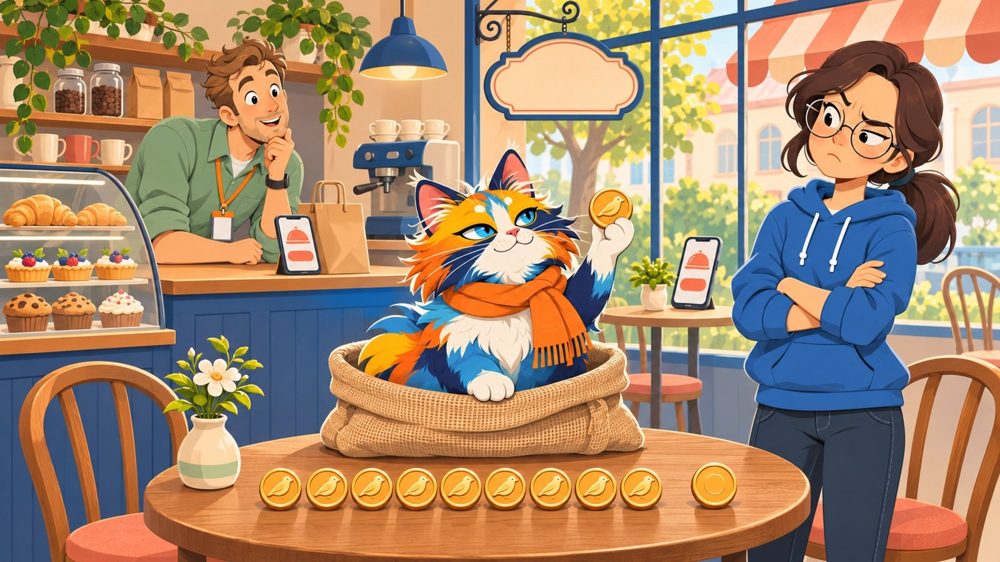
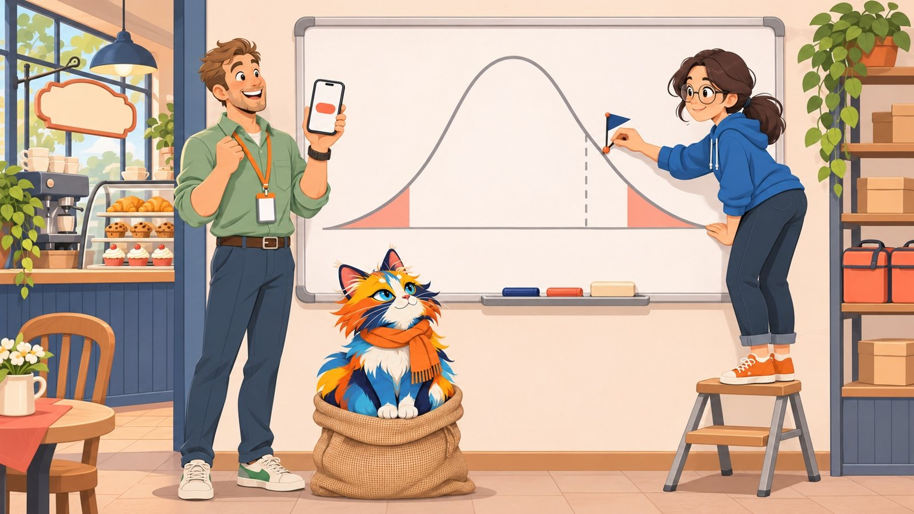
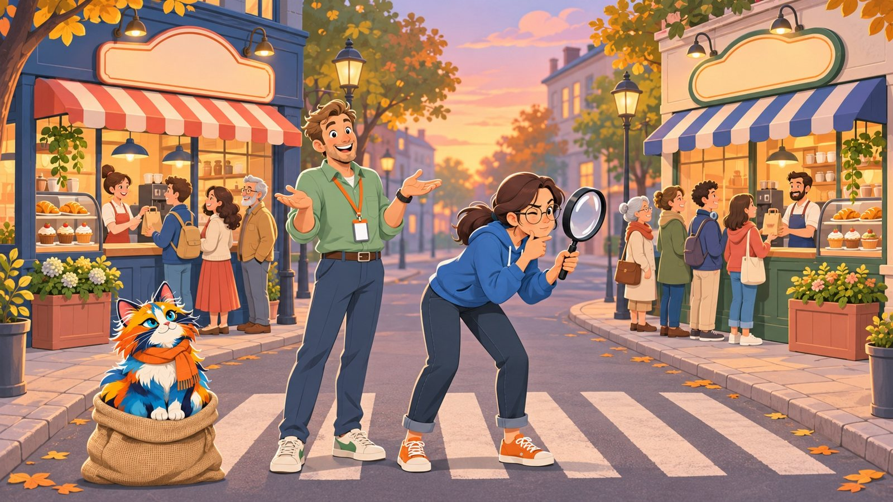

Разница между группами есть почти всегда, даже в A/A (глава 9). Вопрос не «есть ли разница», а «сколько в ней линеек шума». Если много — миру без эффекта трудно её объяснить.
Сначала вспомним
Доставка в среднем едет 30 минут, стандартное отклонение — 5 минут, распределение похоже на колокол. Один заказ ехал 42 минуты. Насколько это необычно?
z = (42 − 30) / 5 = 2.4: заказ ехал на 2.4 сигмы дольше среднего. Дальше 2.4 сигмы вправо лежит меньше 1% колокола, примерно 1 заказ из 120. Это глава 5: сигма — линейка колокола.
После новой упаковки пришла 31 жалоба на пролитый суп. Что спросить первым?
31 жалоба — числитель без знаменателя. 31 из 300 супов и 31 из 30 000 — совсем разные истории. Это глава 8: сначала спроси, откуда данные и от чего доля.
Часть III · глава 10
A/B на простой метрике
После главы ты сможешь посчитать z-тест, p-value и 95%-й интервал разницы для конверсий и средних — руками и в коде.
- 1. Что здесь случайно?
- 2. Как распределено?
- 3. Центр и разброс
- 4. Насколько шумит среднее
- 5. Сколько стандартных ошибок до порога
- 6. Ответ бизнесу

Котейка выбросил 9 орлов из 10 и клянётся, что монетка честная. А новая кнопка в приложении дала +0.65 заказа на 100 гостей. В обоих случаях вопрос один: удивился бы мир, где ничего не происходит?
В главе 9 ты измерил шум A/A-теста. Теперь научимся класть на эту линейку настоящую разницу и считать, сколько в ней стандартных ошибок.
9 орлов из 10 — это много?

Котейка
Монетка честная! Просто сегодня выпало 9 орлов из 10. Бывает же.

Боб, продакт
По-моему, жульничает. Но вдруг просто повезло?

Алиса, аналитик
Посчитаем, как часто честная монетка даёт такой перекос. Если часто — Котейке можно верить.
Напиши число — на следующей карточке проверим.
Бросай серии по 10 честной монеткой
Каждая серия — 10 бросков. Столбик показывает, в какой доле серий выпало столько орлов. Коралловые столбики — результат Котейки и всё, что ещё необычнее. Серые точки — теория.
Число орлов в сериях из 10 бросков
«В обе стороны» — это когда необычным считается и сильный перекос к решкам: 0 или 1 орёл. Так спрашивают, если заранее не знаешь, в какую сторону может жульничать монетка.
Считаем не «ровно так», а «так или ещё необычнее»
Любая конкретная цепочка из 10 бросков, например ОРООРРОРОО, выпадает в 1 серии из 1024. Цепочка Котейки ничем не реже. Маловероятное — ещё не необычное: если считать вероятность ровно своего результата, удивительным окажется что угодно.
Поэтому p-value складывают из трёх частей. Вот все 1024 серии по числу орлов:
| орлов | 0 | 1 | 2 | 3 | 4 | 5 | 6 | 7 | 8 | 9 | 10 |
|---|---|---|---|---|---|---|---|---|---|---|---|
| серий | 1 | 10 | 45 | 120 | 210 | 252 | 210 | 120 | 45 | 10 | 1 |
- Наблюдённое: 9 орлов — 10 серий.
- Столь же редкое: 1 орёл — тоже 10 серий (это перекос к решкам).
- Ещё более редкое: 10 орлов и 0 орлов — по 1 серии.
Вместе 22 серии из 1024, это 2.1%. Если смотреть только в сторону орлов — 11 из 1024, 1.1%.
Кнопка «Повторить заказ»: сигнал или шум?
Боб, продакт
Два дня теста. Контроль: 2000 заказов на 20 000 заходов. С кнопкой: 2130 на 20 000. Плюс 0.65 заказа на 100 гостей! Катим?
Котейка
В моём мире кнопка ничего не делает. Но разница у меня тоже бывает — я же шумлю.
Сначала угадай: как часто в мире Котейки разница получается не меньше 0.65 заказа на 100 гостей в любую сторону?
Колокол — разницы в мире без эффекта; флажок — наша разница; красное — p-value
A/A без эффектаA/A с разницей не меньше нашейнаша разница
Данные теста (можно поменять)
z — сколько стандартных ошибок в разнице

История
В штуках
Из 1000 A/A-тестов по 20 000 заходов в группе разница не меньше 0.65 заказа на 100 гостей в любую сторону бывает примерно в 33. Это и есть p-value: 3.3%.
Формула
p̂ = (xA + xB) / (nA + nB)
SE = √(p̂(1 − p̂)·(1/nA + 1/nB))
z = (p̂B − p̂A) / SE, p = 2·(1 − Φ(|z|))
Словами: в мире без эффекта у групп одна общая конверсия p̂; по ней считаем ширину шума SE (как в A/A), делим на неё разницу и смотрим, какая доля колокола лежит дальше. У Боба: 0.65 / 0.304 = 2.14 стандартной ошибки, p = 0.033.
Без формул и с другими играми — в «A/B на пальцах», шаг 7 «p-value на пальцах» и шаг 6 про вилку эффекта.
Интервал — кандидаты, которые остались живы
Тест отверг мир без эффекта. Но ноль — только один кандидат на правду. Спросим данные Боба и про других: «а если кнопка даёт ровно +1 заказ на 100 гостей?» Тогда разницы в тестах легли бы колоколом вокруг +1. Смотрим, где на этом колоколе наша разница +0.65. Если в хвосте, кандидат гаснет, если в теле — остаётся жив.
Сначала угадай: какие кандидаты останутся живы?
Колокол — разницы тестов, если правда равна кандидату; красное — хвосты по 2.5%; кружки — кандидаты. Ось — разница, заказов на 100 гостей
жив: наша разница в теле колоколапогас: в хвосте
Каждый кружок получен тем же действием, что z-тест на карточке 6: разницу делим на SE и смотрим, дальше ли она 1.96. Только колокол стоит не на нуле, а на кандидате. Живые стоят подряд: если два соседа живы, то и всё между ними. Поэтому получается отрезок. Его края считают одной формулой, без перебора:
(p̂B − p̂A) ± 1.96·√(p̂A(1 − p̂A)/nA + p̂B(1 − p̂B)/nB)
У Боба: 0.65 ± 1.96·0.304, то есть от +0.05 до +1.25 заказа на 100 гостей. Кандидат «ноль» погас: для него z = 2.14 и p = 0.033, как на карточке 6. Поэтому интервал и не задевает ноль: это одна и та же проверка, прочитанная двумя способами. Здесь каждая группа шумит со своей долей, ведь мы больше не предполагаем, что эффекта нет. Но при 20 000 гостей в группе SE почти та же, что в z-тесте.
Идея из курса: «Прикладная статистика», Академия аналитиков Авито — интервал как ряд гипотез, которые тест не отвергает
Средний чек: те же шаги, другая SE
Кнопка могла поменять не только число заказов, но и сумму. Алиса берёт по 5000 заказов в каждой группе.
| группа | заказов | средний чек | стандартное отклонение |
|---|---|---|---|
| контроль | 5000 | 850 ₽ | 600 ₽ |
| с кнопкой | 5000 | 875 ₽ | 620 ₽ |
В штуках
Каждое среднее шумит на σ/√n (глава 7): 600/√5000 ≈ 8.5 ₽ и 620/√5000 ≈ 8.8 ₽. Шумы разности складываются как дисперсии: √(8.5² + 8.8²) ≈ 12.2 ₽. Разница 25 ₽ — это 2.05 таких линейки.
Формула
z = (x̄B − x̄A) / √(sA²/nA + sB²/nB)
Словами: разница средних в стандартных ошибках разности. Здесь z = 25 / 12.2 = 2.05, p = 0.040, интервал 25 ± 1.96·12.2 — от +1 до +49 ₽.
Так можно считать при больших n: среднее тысяч заказов уже похоже на колокол, даже если сами чеки кривые (глава 7). При малых выборках берут t-тест, а с «китами» в выручке нужна осторожность — это темы курса «Прикладная статистика для аналитика».
Напиши z-тест для двух долей
Заполни функцию по формуле из правила. Она должна вернуть пару (z, p), где p — двусторонний p-value. Φ уже есть.
Проверка подставит числа Боба, две кофейни и тест, который хуже контроля (там z должен быть отрицательным).
Котейка переворачивает p-value
Котейка
p = 0.033. Значит, кнопка работает с вероятностью 96.7%. Мяу!
Что не так в словах Котейки?
p-value — это P(такая разница или больше | эффекта нет). Котейка хочет P(эффект есть | такая разница) — это другая условная вероятность, и для неё нужно знать, как часто идеи вообще работают. Это Байес из «Вероятности на пальцах», шаг 6, и тема главы 12.
Четыре задачи и как на них отвечать
Схема ответа одна: переформулируй → посчитай в штуках → запиши формулу → проверь симуляцией → скажи вывод одной фразой.
Как проверить, честная ли монетка? Выпало 9 орлов из 10.
Переформулирую: если монетка честная, как часто бывает такой же перекос или сильнее?
В штуках: из 1024 равновероятных серий 9 орлов дают 10 серий, 10 орлов — 1. Итого 11 серий, 1.1%. Если жульничество возможно в обе стороны, добавляем 0 и 1 орёл: 22 серии, 2.1%.
Формула: P(X ≥ 9) = (C(10, 9) + C(10, 10)) / 2¹⁰ = 11/1024; двусторонний p = 2·11/1024 ≈ 0.021.
Симуляция: кнопка «+1000 серий» на карточке 4.
Вывод: честная монетка так перекашивает примерно в 2 сериях из 100 — повод подозревать, но не приговор; чтобы проверять всерьёз, заранее выбери число бросков и порог.
Осьминог угадал исход 12 матчей из 14. Это доказывает, что он что-то понимает в футболе?
Переформулирую: если осьминог выбирает наугад (50 на 50), как часто он угадает 12 и больше из 14?
В штуках: из 16 384 равновероятных цепочек 12 угадываний дают 91, 13 — 14, 14 — 1. Итого 106 цепочек, 0.65%.
Формула: P(X ≥ 12) = (C(14, 12) + C(14, 13) + C(14, 14)) / 2¹⁴ = 106/16 384 ≈ 0.0065.
Поворот: «предсказывали» сотни животных, а знаменитым стал тот, кому повезло. Из 200 угадывающих наугад в среднем 1.3 наберут 12 из 14. Маленький p у победителя отбора ничего не доказывает.
Вывод: p ≈ 0.0065, но прежде чем удивляться, спроси, сколько было осьминогов.
В двух кофейнях сети проверили по 100 заказов: без замечаний 74 и 83. Вторая работает лучше? И сколько заказов нужно, чтобы такая разница стала заметной?
Переформулирую: разница 9 заказов на 100. Сколько в ней стандартных ошибок?
В штуках: общая доля (74 + 83)/200 = 78.5%. SE = √(0.785·0.215·(1/100 + 1/100)) ≈ 0.058, то есть 5.8 заказа на 100. Разница 9 — это 1.55 SE.
Формула: z = 0.09 / 0.058 ≈ 1.55, p = 2·(1 − Φ(1.55)) ≈ 0.12; интервал — от −2.3 до +20.3 заказа на 100, ноль внутри.
Обратный вопрос: SE падает как 1/√n. Чтобы та же разница 9 из 100 дала z = 1.96, нужно около 160 заказов в каждой кофейне. Но тогда тест заметит такую разницу только в половине случаев. Чтобы замечать в 8 случаях из 10, нужно около 320 — это глава 11.
Вывод: на 100 заказах разницу 9 из 100 не отличить от шума; это не значит, что кофейни одинаковы.
Доля опозданий доставки должна быть не выше 5%. За неделю опоздали 62 заказа из 1000. Норма нарушена?
Переформулирую: одна группа и норма 5%. Если на самом деле опаздывает ровно 5%, как часто будет 62 и больше из 1000?
В штуках: при 5% ждём 50 опозданий из 1000, шум SE = √(0.05·0.95/1000) ≈ 0.0069, то есть 6.9 опоздания на 1000. 62 − 50 = 12 — это 1.74 SE.
Формула: z = (0.062 − 0.05) / 0.0069 ≈ 1.74; односторонний p = 1 − Φ(1.74) ≈ 0.041, двусторонний ≈ 0.082.
Поворот: какой вопрос, такой и p. «Не превысили ли норму?» — вопрос в одну сторону, и он задан до данных, поэтому односторонний p здесь честен: 0.041. Но при доле 5% и 1000 заказов колокол чуть врёт: точный биномиальный расчёт даёт P(X ≥ 62) ≈ 0.051. Когда результат у самого порога, решение по нему шаткое.
Вывод: опозданий больше нормы на 1.2 на 100, и это на границе шума: стоит посмотреть ещё неделю, а не делать выводы по одной.
Вопросы про z-тест и p-value
В тесте нового фото блюд p = 0.12. Что это говорит об эффекте?
p = 0.12 значит: без эффекта такая или большая разница бывает в 12 тестах из 100. Это не редкость, поэтому шум объясняет данные. Но и эффект их объясняет — данных просто мало, чтобы выбрать. Посмотри на интервал: он широкий и задевает ноль.
За месяц в каждой группе по 4 млн гостей. Эффект +0.05 заказа на 100 гостей, p = 0.02. Что верно?
SE здесь около 0.02 заказа на 100 гостей, поэтому даже +0.05 — это 2.4 SE. Интервал — примерно от +0.01 до +0.09: эффект есть, но это 1 лишний заказ на 2000 гостей. Значимо — не значит важно: решает, окупится ли выкатка.
Интервал разницы — от +0.05 до +1.25 заказа на 100 гостей (95%). Как его честно прочитать?
95% — свойство способа строить интервалы: если повторять тест много раз, в 95 случаях из 100 вилка накроет истинный эффект. Практически это читают так: эффекты внутри не противоречат данным, снаружи — противоречат.
Двусторонний p = 0.08, односторонний — 0.04. Какой взять в отчёт?
Двусторонний p вдвое больше одностороннего, потому что считает перекосы в обе стороны. Какой из них нужен, решает вопрос, а не данные. Если выбирать после того, как увидел p, порог 5% перестаёт быть порогом 5%.
Меряй разницу в стандартных ошибках
- p-value — доля миров без эффекта, где разница такая же или больше. Считается «так или ещё необычнее», а не «ровно так».
- Доли: p̂ = (xA + xB)/(nA + nB), SE = √(p̂(1 − p̂)(1/nA + 1/nB)), z = (p̂B − p̂A)/SE, p = 2·(1 − Φ(|z|)).
- Средние (большие n): z = (x̄B − x̄A) / √(sA²/nA + sB²/nB).
- Интервал 95%: разница ± 1.96·SE, где SE считают по долям каждой группы. Не задевает ноль — значит, p < 0.05.
- |z| > 1.96 ⇔ двусторонний p < 0.05. Сторону теста выбирают до данных.
- p ≠ вероятность, что эффекта нет. Значимо ≠ важно: смотри на интервал в штуках.
- z-тест
- разница, делённая на стандартную ошибку, против нормального колокола; z-test
- p-value
- P(такая разница или больше | эффекта нет); p-value
- Двусторонний тест
- необычными считаются перекосы в обе стороны; two-sided (one-sided — в одну)
- Доверительный интервал
- эффекты, с которыми данные не спорят; 95% таких интервалов накрывают правду; confidence interval, CI
